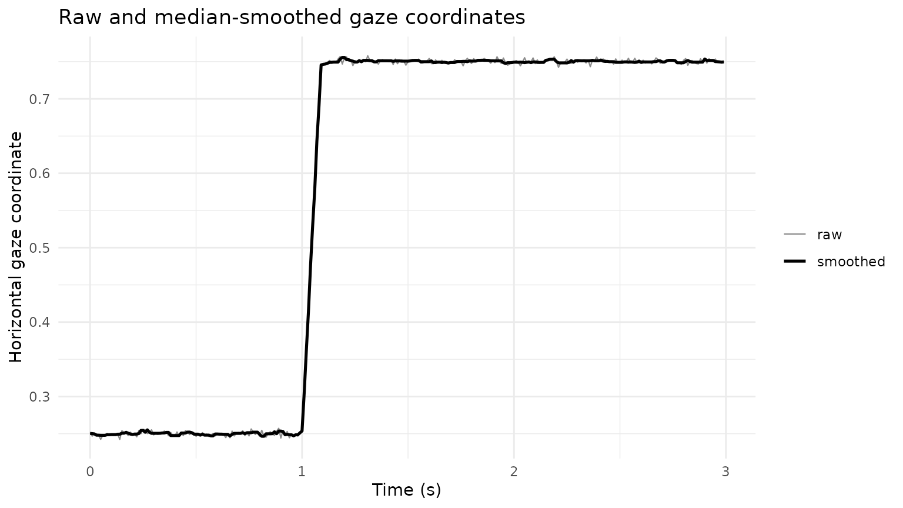
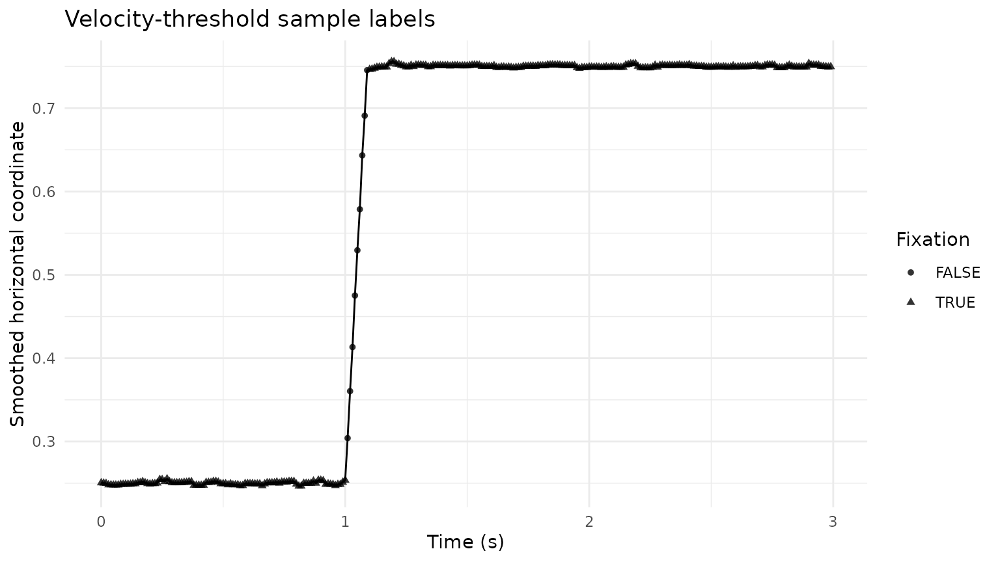
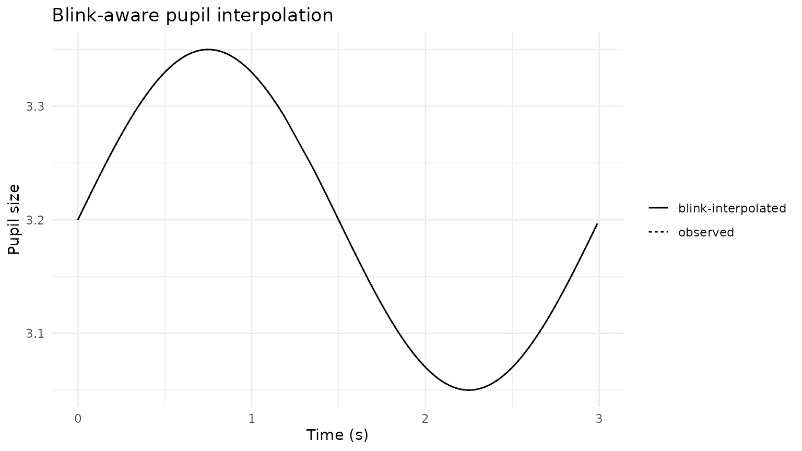

Velocity Fixations, Blink Detection, and Blink-Aware Interpolation
Source:vignettes/articles/fixation-blink-preprocessing.Rmd
fixation-blink-preprocessing.RmdPurpose
This article demonstrates a transparent event-preprocessing branch for sample-level gaze and pupil data:
- smooth noisy gaze coordinates;
- derive fixation events with a velocity threshold;
- detect blink-like pupil intervals;
- interpolate only short, internally bounded blink gaps.
The velocity threshold is expressed in scaled coordinate units per
second. When gaze coordinates are already expressed in visual degrees,
vmax is in degrees per second. For normalized or pixel
coordinates, use x_scale and y_scale when an
appropriate conversion is available.
Simulated sample trace
set.seed(2026)
time <- seq(0, 2.99, by = 0.01)
n <- length(time)
trace <- data.frame(
USER_ID = "P01",
trial = "T01",
TIME = time,
FPOGX = c(
rep(0.25, 100),
seq(0.25, 0.75, length.out = 10),
rep(0.75, n - 110)
) + rnorm(n, 0, 0.003),
FPOGY = 0.50 + rnorm(n, 0, 0.003),
mean_pupil = 3.2 + 0.15 * sin(2 * pi * time / 3)
)
trace$mean_pupil[121:135] <- NA_real_Smooth gaze coordinates
smoothed <- smooth_gazepoint_coordinate(
trace,
method = "median",
window = 5,
group_cols = "trial"
)
ggplot(smoothed, aes(TIME)) +
geom_line(aes(y = FPOGX, linewidth = "raw"), alpha = 0.45) +
geom_line(aes(y = FPOGX_smooth, linewidth = "smoothed")) +
scale_linewidth_manual(values = c(raw = 0.4, smoothed = 0.9)) +
labs(
x = "Time (s)",
y = "Horizontal gaze coordinate",
linewidth = NULL,
title = "Raw and median-smoothed gaze coordinates"
) +
theme_minimal()
Detect velocity-defined fixations
fixation_result <- detect_gazepoint_fixations_velocity(
smoothed,
x_col = "FPOGX_smooth",
y_col = "FPOGY_smooth",
group_cols = "trial",
vmax = 5,
min_duration = 80,
return = "both"
)
fixation_result$events
#> # A tibble: 2 × 14
#> USER_ID trial fixation_id start_time end_time duration duration_ms n_samples
#> <chr> <chr> <int> <dbl> <dbl> <dbl> <dbl> <int>
#> 1 P01 T01 1 0 1 1010 1010 101
#> 2 P01 T01 2 1.1 2.99 1900 1900 190
#> # ℹ 6 more variables: mean_x <dbl>, mean_y <dbl>, median_velocity <dbl>,
#> # max_velocity <dbl>, velocity_threshold <dbl>, algorithm <chr>
fixation_samples <- fixation_result$samples
ggplot(fixation_samples, aes(TIME, FPOGX_smooth)) +
geom_line() +
geom_point(
aes(shape = velocity_fixation),
size = 1.4,
alpha = 0.8
) +
labs(
x = "Time (s)",
y = "Smoothed horizontal coordinate",
shape = "Fixation",
title = "Velocity-threshold sample labels"
) +
theme_minimal()
Detect blink intervals
blinks <- detect_gazepoint_blinks(
trace,
pupil_col = "mean_pupil",
group_cols = "trial",
min_duration = 50,
merge_gap_ms = 20
)
blinks
#> # A tibble: 1 × 10
#> USER_ID trial blink_id start_time end_time duration duration_ms n_samples
#> <chr> <chr> <int> <dbl> <dbl> <dbl> <dbl> <int>
#> 1 P01 T01 1 1.2 1.34 150. 150. 15
#> # ℹ 2 more variables: reason <chr>, pupil_columns <chr>Interpolate eligible blink gaps
interpolated <- interpolate_gazepoint_blinks(
trace,
blinks,
pupil_cols = "mean_pupil",
group_cols = "trial",
method = "linear",
max_gap_ms = 500
)
ggplot(interpolated, aes(TIME)) +
geom_line(aes(y = mean_pupil, linetype = "observed")) +
geom_line(
aes(y = mean_pupil_blink_interp, linetype = "blink-interpolated")
) +
labs(
x = "Time (s)",
y = "Pupil size",
linetype = NULL,
title = "Blink-aware pupil interpolation"
) +
theme_minimal()